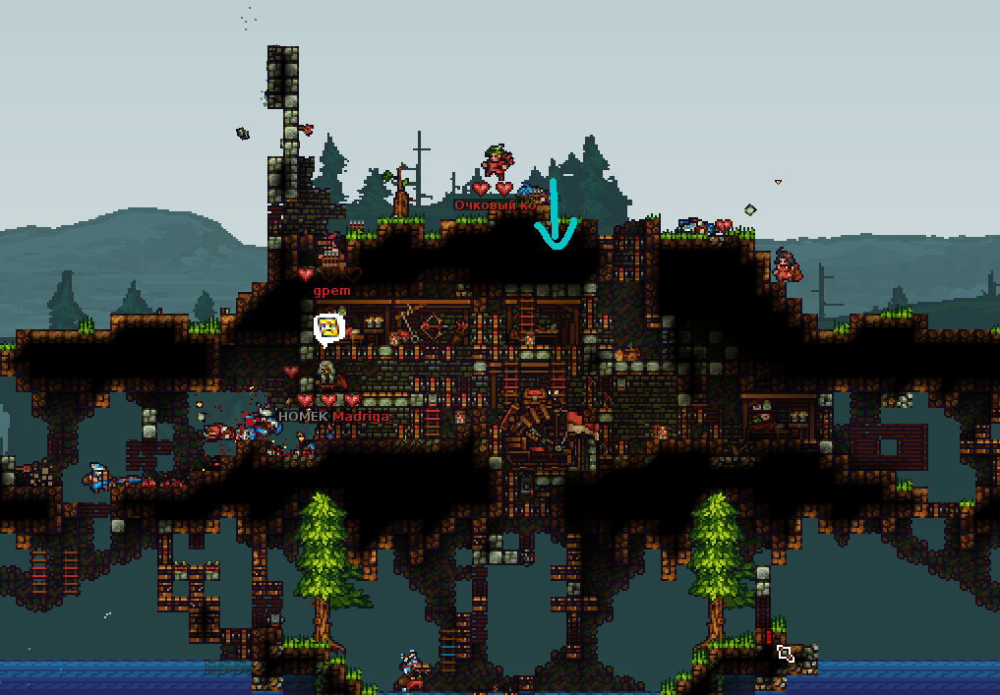
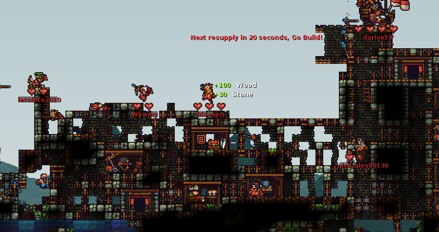
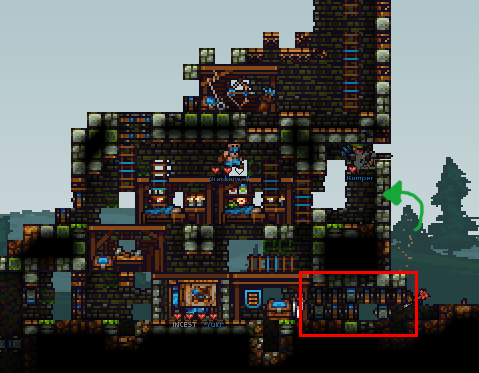
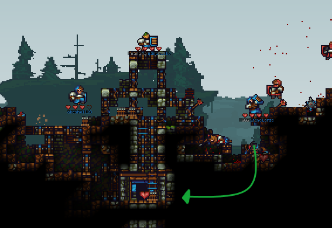
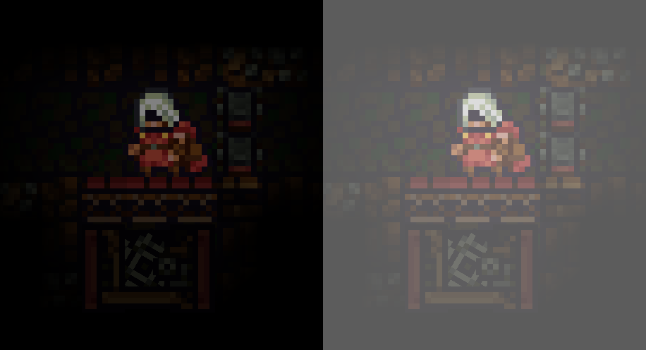
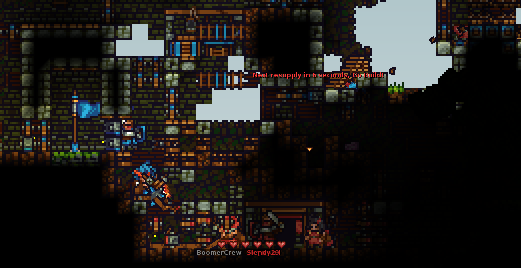
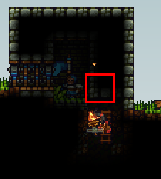

Chapter 3 Builder III: Progressive playstyle

3.1 What you're going to focus on
Progressive builders mainly focus on gaining and keeping control of the middle of the map, and then on helping their team damage enemy structures. You can also think of coin-farmers and rats as progressive builders -- unlike offensive opportunistic builders, they plan their actions over time.
3.2 Mid control
Having control of the middle is very important for the team -- your team can attack the enemy tower better and quicker if they're able to quickly travel to mid with a tunnel.
3.2.1 Start of the match
The first thing you want to do when the build time over is to get to mid as a builder and place a tunnel (make sure you have one next to your tent first! -- preferably with a sawtrap). Prepare some materials before the build time ends -- at least 250 stone (100 stone for the tunnel + defences) and some wood (at least 400 -- 200 for tunnel and the rest for doors). The more mats -- the better. You can also take gold if you have some to be able to build it quicker (50 gold), and if not -- you will dig the gold out at mid. You can also take a drill if you'd like to mine out/dig out some parts of the mid faster.
As you can see in the gif above, first we want to quickly make a workshop somewhere in the middle of the map and then build defenses for it -- doors (with at least one stone door) and stone blocks. If the middle of the map has any underground spots, build the tunnel here -- dirt acts well as a natural defense against kegs and such. If the middle is flat, make sure there's enough stone blocks so that a good knight won't quickly get into the tunnel with explosives.
3.2.2 Upkeep and further expansion
Once the tunnel is built, you want to upkeep control of mid. Go back to your tent to get some materials from the storage (or just dig some more if there's none in the storage) You should turn your mid base into basically your second front tower -- add some shops (especially food shop and knight shop) and a front wall with lots of doors and maybe some platforms. You should eventually buy a ballista for quicker respawn as well. Make sure it has lots of protection so that the enemies don't destroy or capture it easily. You can put it in the same spot as the tunnel (if you don't plan to fire it at the enemies). Ballistas need 5x5 blocks of space.
Here's an example of a decent mid base:

As you can see, it's pretty solid -- it has a respawn ballista, a tunnel and shops, as well as lots of doors. Moreover it's made in the middle of a hill, so there's lots of additional dirt protection as well. One thing that could be improved is making additional doors to the top, as well as additional defences on the top in general; as you can see, a blue builder could block the only top doors and then drill downwards through dirt to the ballista and tunnel (blue arrow).
If the map is small enough, you could also connect the mid base with your tower (similar to how defensive base expansion explained in previous chapter works). This will make it even harder for the enemies to take it back.

All of the stuff from the previous chapter applies to managing a mid base and making a good mid tower, including using spikes, keg dropping, base expansion and so on. One difference is that you're going to have to repair much more often and fight more enemies, and sometimes you probably should change to knight if your team isn't doing very well. Mine spam is advised as well.
Depending on how big the map is, you may also want to have siege on top of your mid base -- ballista with explosive bolts and catapult for launching knights.
3.2.3 Taking mid from the enemies
Sometimes the mid rush at the start of the game can fail and the enemy team could take mid. At that point, your goal as a progressive builder is to pretty much take control of mid. This will require you to be a bit aggressive, and even though combat is mostly going to be mentioned in the next chapter, it's good that you know some basics.
First of all, the first step to taking control of mid is destroying or capturing the enemy's ballista (for respawn) or the tunnel (used for quick travel). You should look at what the mid base looks like -- what are its weaknesses, how many doors does it have, and what would be the easiest way to get into the ballista/tunnel. One thing you should do is find a path to there which would require the least effort and would not require too many doorfights, which can get you easily killed -- start destroying enemy doors only if it's the fastest or the only way to get to your destination.
For example, in the image below, you shouldn't try to go through the doors (red square) -- it will take a lot of time and enemy knights are likely to kill you. What you should do is block the doors with a stone block and then drill through the 1 layer of stone blocks above (green arrow) -- that would be the fastest way to get into the part with the tunnel.

It's hard to take a mid base entirely by yourself -- the CTF mode is a team mode after all. First, you need to pay attention to how your knights are doing. Whenever some skirmishes near mid base happens, you should wait and see which team gains advantage. You should start pushing mid as soon as you see that your knights & archers are winning the fight.
When you finally get to the enemy ballista or tunnel, as you can see in the gif, you want to make lots of doors for your knights. Spamming doors when taking any enemy structure is very important. They're very helpful to your knights. Of course, this also means that you want to have lots of wood when pushing. You should make the doors right next to the tunnel so that the enemies can't block them. Also, you want to block all enemy doors. If you have knights with you, enemies that will travel by the tunnel will usually be quickly killed by them due to stun from travelling, and dead enemies won't be able to respawn on a ballista that is being captured. However, other enemy knights that are in other parts of mid may be able to still kill you. If there's some space between the tunnel itself and enemy doors -- just block them with stone blocks (generally try to not use doors -- your knights may open them accidentally).
In most cases there won't be any space between entrances and the tunnel, so you want to remove one door from each pair as fast as possible and quickly place a stone block.
If you see any enemy knights coming and you know that you won't be able to block them fast enough, you should retreat behind your own doors and let your knights handle the situation.
Either way, you should help your knight with destroying the tunnel -- although slashes do a lot of damage to a tunnel, drilling or just mining a tunnel is still going to be very helpful.
When pushing any enemy structure, speed is important too. Unless the mid base is sparsely protected with only a few doors, you probably always want to have a drill for faster digging. This may require you to mine out some stone sometimes or make use of your quarry, or wait for more resupplies.
Keep in mind that you generally do not want to drill doors. They overheat the drill too quickly -- you should destroy almost all doors by hand (unless you need to destroy them really quickly to avoid getting killed by the enemy or if speed is important, or if there's no other way to getting to the tunnel). Same for platforms. However, you should drill out solid blocks.
Try to select a path that will be the least dangerous (even if it means getting to enemy tunnel a bit slower). For example, if a tunnel is underground like in the image below, in most cases you shouldn't go on top of it and try getting through all these enemy defenses. Going through the dirt by ratting (green arrow), even if a bit slow, is more likely to be successful.

Of course, you're not likely to instantly succeed after your first try. The point is to keep putting pressure on the enemies and not let them have too much time to repair, eventually letting you retake mid.
After the tunnel is destroyed, you have 2 options regarding what to do. If it's relatively safe around and you have protection, you can make your own tunnel in the place of the old enemy one, and then slowly retake the rest of the mid base. Of course, it depends on how big the mid base actually is -- if it's just a few layers of stone blocks and some doors, this shouldn't be hard to do.
However, if the mid base is rather big and there are still lots of enemies around, making your own tunnel wouldn't be that good of an idea. In this case you may want to take the gold that the destroyed tunnel dropped and take it to your base's storage -- although gold isn't that rare on some maps, taking it away from the enemies will be an annoyance to them.
Of course, this may all seem a bit confusing to a less advanced builder. Don't worry -- playing offensive requires more practice than theory. Eventually you'll instinctually know how you should react to certain situations and what you should do -- you can treat this section as some good general advice that you should keep in mind when pushing. Keep practicing and don't give up.
3.3 Ratting
Ratting -- tunneling underground as a builder -- is a major tactic in KAG, viable on almost all the maps. Although some consider it a cheesy tactic, if done well a proper rat attempt can end an hour-long stalemate, even if your team was losing. It's time-consuming, but also hard to counter.
3.3.1 Where to start making your rat tunnel and how deep should it be
It's important to pick a good spot for starting your rat tunnel. First, it depends on where you want to rat to and if you control mid. If you want to rat to the enemy flag + you have control of mid, then starting the tunnel from under your own tower would be pointless.
Moreover, if your tunneling attempt fails, enemies will be able to take the tunnel and use it against you. Which means that you don't want to start it next to a flag. Starting it next to your tent is also pointless -- you're going to waste time on digging through an area that entirely belongs to your team.
If you have mid, you should start making your tunnel somewhere there. It depends on how much you plan to be ratting for and if you'd rather be safer than faster, as well as on the amount of blocks you'll need to dig out to get to enemy territory. Still, be careful -- if the enemies will take the tunnel, they'll gain access to middle of the map.
Generally, if you're not going to be ratting that far (on small maps), you don't need to go that deep. However, for bigger maps, you could choose to go as deep as possible -- so that the enemies have a harder time countering you from above. Ratting only 4-5 blocks deep is also viable, and if successful you will get to your destination faster, but it's also easier to counter.
3.3.2 When to rat
You don't really need to rat on every map every time -- especially if your team is doing very well overground. Keep in mind that ratting can split your team -- if other builders start coming with you, and eventually also knights, there will be less people to attack the enemy tower above the ground as well as less people to protect your mid base. Sometimes it's better to keep putting on pressure rather than start ratting. Ratting can take a long time as well, especially if your first attempt fails and you want to keep going on.
3.3.3 Stealthy ratting or not?
If you want to be stealthy (at least for some time), there are obviously some things you shouldn't do that will make you visible for the enemies, for example:
- Using a lantern -- makes you visible to pretty much everyone
- Using emotes
- Typing outside of team chat -- typing in general chat by pressing T makes a chat bubble. This does not happen if you use team chat instead (clicking Y instead).
Although that's obvious, the question is if you even want to be stealthy. As mentioned in the previous chapter, you can easily see on the minimap if there's a rat tunnel. It's not that hard to notice enemy tunnels. Using a drill is also a massive advantage -- it speeds up the process a lot if done well (will be explained soon), but it also produces light and make the tunnel more noticable to enemies.
Moreover -- sometimes you actually want your ratting to be noticed. Using emotes and letting the entire enemy team know that you're ratting can cause a lot of enemies to focus on you and try to counter the tunneling, while not paying as much attention to the rest of their base. Diversive tunnels are a great tactic if your team can push well overground -- especially if you can keep defending the tunnel for as long as possible, getting as many enemies as possible to you.
3.3.4 Managing your rat tunnel
First, you want to place a builder shop at the bottom of the tunnel. You can return to it every 20 seconds to get resupplies. You may also want to place a knight shop. It's good to place a lot of mines in case the enemies take the tunnel. You should also obviously spam lots of doors -- the more wood you have the better. Remember to put stone backwall behind all doors.
Tunnels are one of the only places where a trap could actually be effective as well (since it's dark). You could place a trap somewhere in there as well -- a saw and some teambridges.

(Left side is how it looks naturally in-game, right side is brightened)
3.3.5 Placing a tunnel
Eventually, if you get closer to your destination -- for example, somewhere close to the flag, you should place a tunnel for faster travel. Of course, you need to have gold, stone and wood for it first, which is why you should prepare some materials (especially gold, you can eventually get 100 stone from resupplies on a builder shop but bringing some is good too) before starting ratting.

This will let reinforcements arrive quickly (knights) as well as allow you to get to base quicker after you take the flag. Make sure to place lots of doors around the tunnel.
At that point the enemies will probably already have noticed you and will start anti-ratting efforts. If you're lacking knight support, you should definitely mention that in the chat (preferably in team chat).
3.3.6 Using a drill
Drilling makes making long rat tunnels much easier due to how much faster you can dig through the ground, especially if it's 2 or more builders drilling. Drills obviously will overheat somewhat quickly, but that's not a problem. The other reason for why we want a builder shop near is so that we can constantly buy water buckets. One water bucket can produce 3 water splashes (as mentioned in first chapter, press left mouse button while holding one to do that) which will instantly cool down the drill. The idea is to get a drill and use a water bucket on it as soon as it overheats. If you have a knight with you, you should ask him to pick up water buckets after you buy them and use them. If you're ratting solo, you can do it yourself.
There's also another trick regarding ratting with drills -- you can bring down some water if the map has some and place a stone door so that it only fills up the bottom layer. This will constantly cool down the drill so that it doesn't overheat. However, keep in mind that this will cause you to drill slower (drills work slower in water), so for maximum efficiency I recommend actually going one layer above it and cooling down the drill when needed, like in gif below.
Despite making you easily noticable to enemies, using drills can make ratting a much more stronger tactic. I do this almost always whenever I decide to rat (although I mostly play as an offensive builder overground).
3.3.7 Doorfights
As mentioned in the earlier chapter, doorfights can happen -- this is when both teams spam doors next to each other and try to destroy the opposing doors, as well as kill the enemies.
When it gets to the point of a doorfight, you can't do that much besides relying on your knights. If it's a dark tunnel and there's a builder shop near, you should get a lantern -- since the enemies already know you're here, it'll just increase your knights' visibility. You should spam doors and be careful to not die -- if you see that any of your knights is going to open your doors and attempt to kill the enemies, you should back off to not die.
Another thing you can do is going around. You could drill two blocks up or down and then to the side. After that you could attempt to block the enemies and have your knights directly attack them or keep going to the enemy flag while defending from enemies at the same time. For example, in the gif below, we try go around the red doors because there's way too many of them (as well as a lot of enemies)
You can also place a mine in your door and then wait for enemies to get to it. Sometimes they won't notice it and will walk into it, instantly dying.
3.3.8 Getting to the flagroom
Getting to the flagroom can be quite tricky due to enemy knight slash angles.
Basically, when you're ratting upwards like in the image below, and the flagroom has no doors on the part where you're ratting, you will have to destroy the four blocks in the red square in the image below to get to the flagroom.

However, this is quite problematic -- because after you destroy the first two blocks, place doors and go up, enemy knights in the flagroom would be able to slash you if you're in a place like this:
You could consider not placing the doors then and try to destroy the blocks from a distance where knights wouldn't be able to slash you. However, this is viable only if there are no enemy builders in the enemy flag room -- if you don't place doors they will just place stone blocks there or their own doors.
What you want to do is go slightly to the side so that you can replace enemy stone blocks with doors without getting damaged by the enemy knights, like in the gif below.
Of course, sometimes flag rooms have entrances from both sides. That's a bit harder to rat to because it's easier for the enemies to kill you. In this case you need to mostly rely on your knights to kill the enemies (spam doors when possible as well).
Sometimes when you try to drill through solid blocks (such as stone), the enemy may have a lot of materials and constantly repair it. There's a little "unintended feature" which will allow you to bypass that -- if you place horizontal ladders like in the gif below, they won't be able to repair the blocks anymore (and neither will you be able to damage the blocks by normal pickaxe). You will still be able to drill through the blocks, though. Keep in mind that knights howevver will be able to slash and destroy the ladders through the wall if there are any, so it may take a few tries.
3.4 Coin farming (again)
Similar to defensive builders, if you keep expanding your mid base, you will eventually get lots of coins. Again, you can decide to buy siege, ballista bolts or kegs for your team on mid. Some builders try to die as rarely as possible and try to gather 400 or more coins then use all of it at once by doing bomb arrow spam.
You build an archer nest with some platforms like on the gif below, buy a lot of bomb arrows at once and then fire it at the enemy base. This is similar to spamming bomb arrows as a defensive builder, but as a builder that mostly sticks to mid you are able to actually be more precise and aim them to cause a bit more damage.